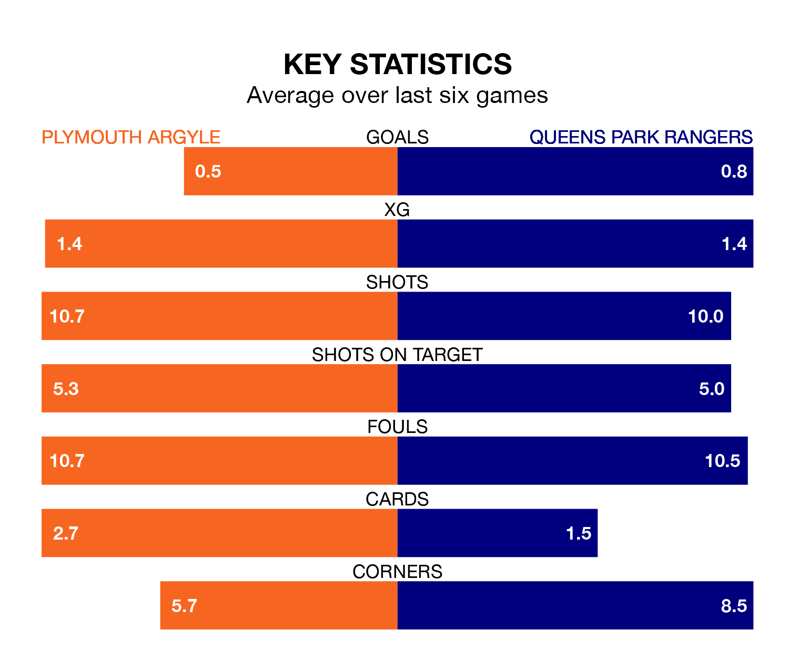

Plymouth Argyle are on a poor run ahead of hosting Queens Park Rangers at Home Park on Tuesday, with just four points collected from their last six games.
The Pilgrims have picked up one win and one draw in their last six EFL Championship games, and face a QPR side whose last six games have brought two wins and two draws.
In Morgan Whittaker, Plymouth have one of the league's sharpest shooters so far this season. He has notched 19 goals in 41 appearances, to sit third in the scoring charts.
His goal rate of one every 186 minutes is much quicker than that of Ilias Chair, QPR's top scorer with a goal every 662 minutes, and a total of five goals in 39 games.
With 39 goals in 41 games so far this season, Rangers are scoring at below the league average rate with 1.0 goals per game. And they are conceding at an average rate, letting in 53 goals at a rate of 1.3 per game.
Argyle, meanwhile, are above average scorers, with 1.4 goals per game, compared to a league average of 1.3. They have conceded 1.6 goals per game.
The Pilgrims are 19th in the table after 41 games, of which they have won 11 and drawn 11, earning 44 points.
The visitors are two places ahead of the home team in 17th, with 12 wins and 10 draws putting them on 46 points.
Plymouth's last match was on Friday, a 1-0 win against Rotherham United, with Bali Mumba getting the goal for the Pilgrims.
QPR lost 2-0 against Sheffield Wednesday last time out, on Saturday.
Tuesday's match will be refereed by Jeremy Simpson, who has taken charge of nine EFL Championship games so far this season, issuing one red card and booking 27 players. He has awarded two penalties.
He is yet to oversee a match featuring either Plymouth or QPR this season.
Updated: 14:47 (UTC), 09/04/24